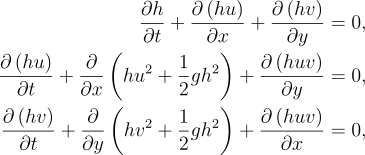

Description of Equations
The Shallow Water equations are used for describing the flow of water when the depth is low relative to the wave length. They are derived by integrating the Navier–Stokes equations across the depth. A conservative form of the shallow water equations is shown below where h is the water height, u is the water velocity in the x direction and v is the water velocity in the y direction. The following equations operate on a non rotating plane.

The shallow water equations are commonly used to model tsunamis. The shallow water equations are valid for
tsunamis because
tsunamis are gravitational waves whose wavelength is large relative to the wave depth. Tsunamis are waved
generated by a displacement of water often caused by an earthquake or landslide. Tsunamis are very important
to understand because they can have a devastating impact on people. For example the Good Friday Earthquake
of 1964 not only destroyed Anchorage but a tsunami generated by this earthquake devastated Valdez. The
shallow water
equations are also useful for modeling erosion because
the equations can be applied to modeling of water on uneven surfaces and the water can modify the surface it
is flowing on.